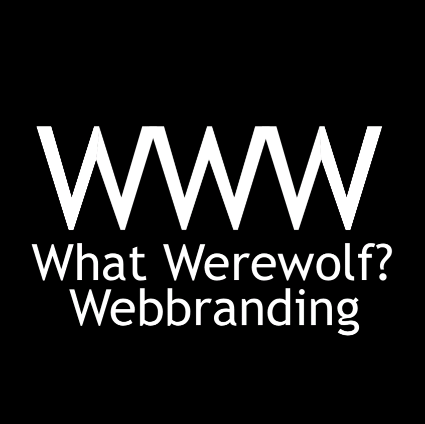

In today's AI-driven world, where algorithms shape online experiences, a unique website is more important than ever. Generic sites easily get lost in the digital clutter. A distinctive website, however, helps you stand out, authentically representing your brand or yourself in a way AI can't replicate. It's how you showcase your creativity and expertise, connect with people, and leave a lasting impression beyond what any AI can recommend.